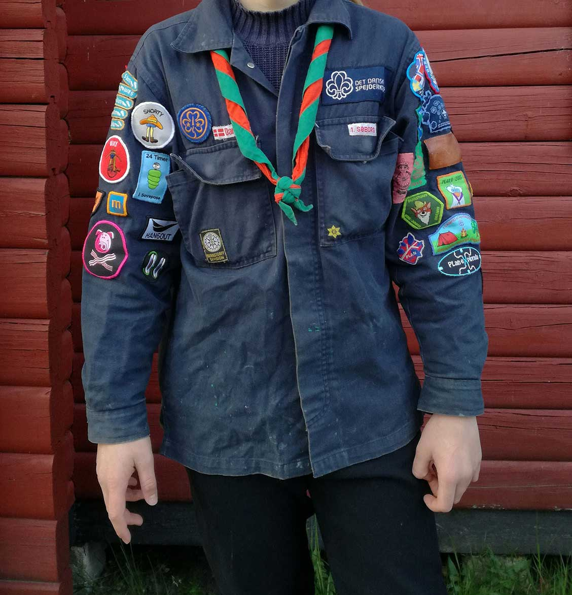
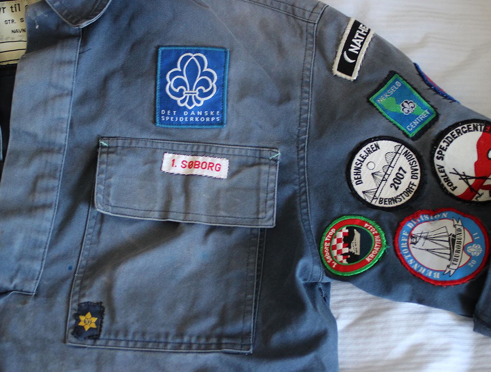
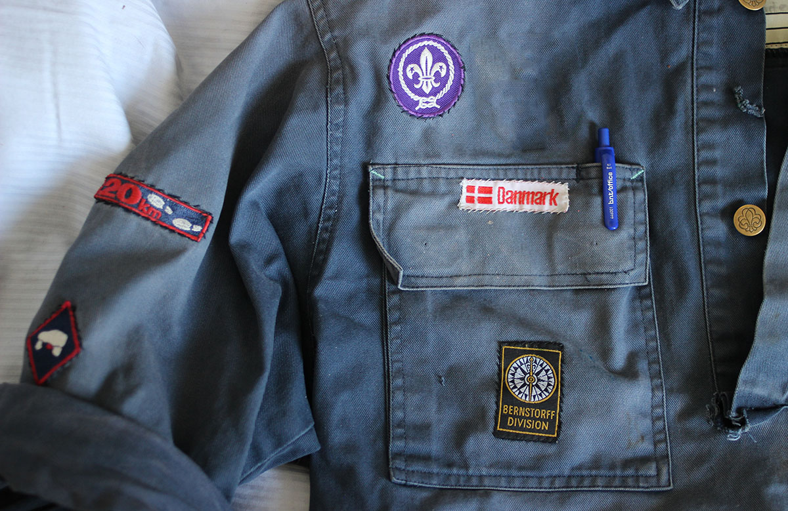

Uniformsvejledning for DDS
Uniformen er en meget vigtig del af spejderlivet. Vi arbejder, lære, hygger, fryser og sveder i den året rundt, og derfor er det selvfølgeligt også vigtigt at den ser ordenlig ud og følger de retningslinjer som Det Danske Spejderkorps har sat op.
Vi har lavet en lille guide til hvordan mærker skal sidde på uniformen, for det kan godt være svært at følge med nogle gange (især hvis man er forældre og skal sy lille Lars mærker på). I vores guide skriver vi som om man har uniformen på, så venstre bryst er altså kun venstre hvis man har uniformen på. Hvis den ligger foran en, men fronten imod, så er det selvfølgelig højre side.
Kort sagt så er uniformsretningslinjerne: På brystet kan det ses hvor du kommer fra, og på armene er hvad du kan og hvad du har lavet i løbet af din spejder karrierer. Her kommer en lidt mere detaljeret beskrivelse:
Venstre bryst
Over venstre lomme:
Korpsmærke. Dette viser at spejderen er fra DDS. På de fleste nye uniformer er dette mærke broderet direkte på uniformen, men ældre uniformer har et DDS mærke syet må. Der er ingen regulationer omkring hvilket mærke det skal være, nyt eller gammelt, så længe det viser at spejderen er fra DDS.
Toppen af venstre lomme:
Gruppemærke/gruppebånd. Viser hvilke gruppe spejderen er fra.
Bunden af venstre lomme:
Årsstjerne. Indikerer hvor mange år spejderen har været spejder. Årsstjernerne går fra 1 til 10, og der skal kun være en syet på af gangen, at der ikke skal være 1, 2, 3 osv. ved siden af hinanden. I nogle grupper er det tradition at når man har været spejder i over 10 år får man et 8-tal som syes på sidelens for at symboliserer uendelig.
Højre bryst
Over højre lomme:
WAGGGS/WOSOM-mærke. Dette mærker er et internationalt mærker for den mandelige/kvindelige spejderorganisation. Pigespejdere har WAGGGS mærket og drengespejdere har WOSOM mærket.

Toppen af højre lomme:
Landemærke. Her har vi et Danmarksmærke som symboliserer hvilket land vi kommer fra.
Bunden af højre lomme:
Divisionsmærke. Dette mærke viser hvilken division spejderen tilhøre. Divisionen er en gruppering af spejdergrupper i et geografisk område.
Venstre arm
Venstre arm er dedikeret til turmærker og lejrmærker. Det er mærker som spejderen får efter forskellige spejderture og lejre som han/hun har deltaget i. Disse mærker udleveres ofte på eller i slutningen af den pågældende tur. Der er ikke nogle officielle regler om hvilken rækkefølge mærkerne skal være i.
Højre arm
Denne arm er dedikeret til kilometermærker, færdighedsmærker og forløbsmærker, både de officielle og uofficielle.
Kilometermærker får spejderen efter at have gået et bestemt antal kilometer indenfor en specifik tidsramme. Disse mærker optræder ofte grupperet øverst på højre arm, men der er ikke nogle officielle regler om hvor de skal sidde, så længe det er højre arm. Disse indbefatter også uofficielle kilometermærker som fx 5-km baglæns.
Færdighedsmærker, også kendt som duelighedstegn/mærker, får spejderne efter de har vist at de mestre en bestemt færdighed. Eksempler er knivbevis, øksebevis, savbevis, samt uofficielle duelighedstegn som Knotnut.
Forløbsmærker er mærker som spejderne tager over flere møder, med et specifikt tema eller læringsmål. Mange af disse mærker har forskellige niveauer, som passer til forskellige aldersgrupper. Eksempler på forløbsmærker er håndværk, klar dig selv, orientering og pionering, samt de meget populære uofficielle mærker som 24 timer i sovepose, Shorty og Hangout.